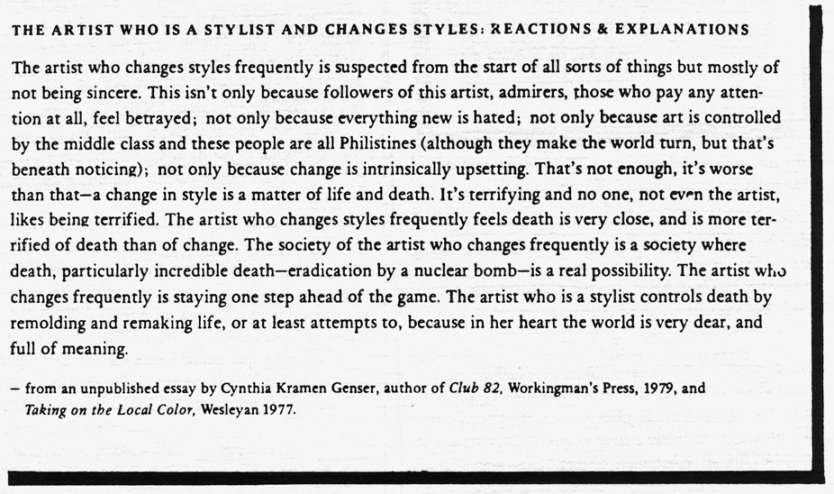

.endnotes
With this issue of HOW(ever) we begin Volume III. For those of you who have supported us from the beginning, we are most grateful. For those of you who want to continue to receive H(er) or to give a subscription to a friend, colleague or library, our rates are $7.00 for individuals and $9.00 for libraries and institutions. For libraries interested in purchasing the complete series, beginning with Vol. I, we have a limited number of archival sets available. Single copies are not for sale, except on a limited local basis, nor are free sample copies available. Subscription checks should go to HOW(ever), c/o Jaffer, 871 Corbett, San Francisco, CA 94131. No further reading of poetry manuscripts will take place until October, 1986, due to special issues already planned for Nos. 2 and 3 of Vol. III. Kathleen Fraser will be on sabbatical from February through August. Editorial correspondence will be forwarded. Material for
Alerts and Postcards should be sent to Susan Gevirtz, 836 York St.,
San Francisco CA 94110.
 go to this issue's table of contents

 THE ARTIST WHO IS A STYLIST AND CHANGES STYLES: REACTIONS & EXPLANATIONS
THE ARTIST WHO IS A STYLIST AND CHANGES STYLES: REACTIONS & EXPLANATIONS